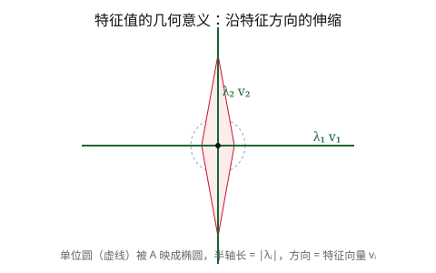

对角化
\(A=S\Lambda S^{-1}\)，\(S\) 列即特征向量，\(\Lambda\) 对角即特征值。
18.06 · 第 21 课
若矩阵 \(A\) 有 \(n\) 个线性无关的特征向量，我们就可以把它写成 \(A=S\Lambda S^{-1}\)。这把复杂的矩阵运算转化为对角阵上的简单运算，是差分与微分方程、矩阵幂的核心工具。
设 \(A\) 有 \(n\) 个线性无关的特征向量 \(\mathbf{x}_1,\dots,\mathbf{x}_n\)，对应特征值 \(\lambda_1,\dots,\lambda_n\)。令
\[S = [\mathbf{x}_1\ \mathbf{x}_2\ \cdots\ \mathbf{x}_n],\qquad \Lambda = \operatorname{diag}(\lambda_1,\lambda_2,\dots,\lambda_n).\]则
\[AS = A[\mathbf{x}_1\cdots\mathbf{x}_n] = [\lambda_1\mathbf{x}_1\cdots\lambda_n\mathbf{x}_n] = S\Lambda.\]因为 \(S\) 列满秩可逆，得到对角化（diagonalization）：
\[A = S\Lambda S^{-1}\qquad\text{等价地}\qquad \Lambda = S^{-1}AS.\]几何解读：切换到特征向量构成的基 \(S\) 下，矩阵的作用变成沿各基方向独立缩放——这就是对角阵 \(\Lambda\) 的意义。
定理：\(n\times n\) 矩阵 \(A\) 可对角化当且仅当它有 \(n\) 个线性无关的特征向量。
充分条件：若 \(A\) 有 \(n\) 个互异特征值，则必可对角化。
反例：\(A=\begin{bsmallmatrix}1&1\\0&1\end{bsmallmatrix}\) 特征值全为 1（2 重），但只有一个线性无关的特征向量 \(\begin{bsmallmatrix}1\\0\end{bsmallmatrix}\)，故不可对角化。
注意："互异特征值"只是充分条件。单位矩阵 \(I\) 特征值全为 1（\(n\) 重），任何可逆矩阵都可对角化它。
对角化后，矩阵幂变得极其简单：
\[A^k = (S\Lambda S^{-1})^k = S\Lambda^k S^{-1}.\]其中 \(\Lambda^k = \operatorname{diag}(\lambda_1^k,\dots,\lambda_n^k)\)。
差分方程 \(\mathbf{u}_{k+1}=A\mathbf{u}_k\)：设 \(\mathbf{u}_0\) 给定，则
\[\mathbf{u}_k = A^k\mathbf{u}_0 = S\Lambda^k S^{-1}\mathbf{u}_0.\]把 \(\mathbf{u}_0\) 按特征向量展开：\(\mathbf{u}_0=c_1\mathbf{x}_1+\cdots+c_n\mathbf{x}_n\)，其中 \(\mathbf{c}=S^{-1}\mathbf{u}_0\)。则
\[\mathbf{u}_k = c_1\lambda_1^k\mathbf{x}_1 + c_2\lambda_2^k\mathbf{x}_2 + \cdots + c_n\lambda_n^k\mathbf{x}_n.\]当 \(|\lambda_i|<1\) 时该项衰减，当 \(|\lambda_i|>1\) 时该项发散，当 \(\lambda_i=1\) 时该项保持不变——稳态（steady state）由 \(\lambda=1\) 的项决定。
对常微分方程组 \(\mathbf{u}' = A\mathbf{u},\ \mathbf{u}(0)=\mathbf{u}_0\)，同样对角化：令 \(\mathbf{u}=S\mathbf{v}\)，则
\[S\mathbf{v}' = AS\mathbf{v} \;\Longrightarrow\; \mathbf{v}' = \Lambda\mathbf{v}.\]这是 \(n\) 个解耦的标量方程，解为 \(v_i(t)=e^{\lambda_i t}v_i(0)\)。于是
\[\mathbf{u}(t) = S\,e^{\Lambda t}\,S^{-1}\mathbf{u}_0 = e^{At}\mathbf{u}_0,\]其中 \(e^{\Lambda t}=\operatorname{diag}(e^{\lambda_1 t},\dots,e^{\lambda_n t})\)。按特征向量展开：
\[\mathbf{u}(t) = c_1 e^{\lambda_1 t}\mathbf{x}_1 + \cdots + c_n e^{\lambda_n t}\mathbf{x}_n.\]稳定性（stability）：当且仅当所有特征值的实部 \(\operatorname{Re}(\lambda_i)<0\) 时，\(\mathbf{u}(t)\to\mathbf{0}\)（稳定）；若任一 \(\operatorname{Re}(\lambda_i)>0\) 则发散。
核心主线：特征值决定系统的长期行为——差分的 \(|\lambda|\) 与微分方程的 \(\operatorname{Re}(\lambda)\)。

问题 1：对角化 \(A=S\Lambda S^{-1}\) 中，\(S\) 的列是？
问题 2：若 \(A=S\Lambda S^{-1}\)，则 \(A^k\) 等于？
问题 3：微分方程 \(\mathbf{u}'=A\mathbf{u}\) 零解稳定的充要条件是？
问题 4：下列哪项保证 \(n\times n\) 矩阵 \(A\) 可对角化？
\(A=S\Lambda S^{-1}\)，\(S\) 列即特征向量，\(\Lambda\) 对角即特征值。
可对角化 \(\iff n\) 个线性无关特征向量；互异特征值是充分条件。
\(A^k=S\Lambda^k S^{-1}\)，差分方程的解按 \(\lambda_i^k\) 展开。
稳定性由 \(|\lambda|\)（差分）或 \(\operatorname{Re}(\lambda)\)（ODE）决定。
lecture_slides/lecture_22.pdflecture_summaries/lecture_2_7_summary.pdf